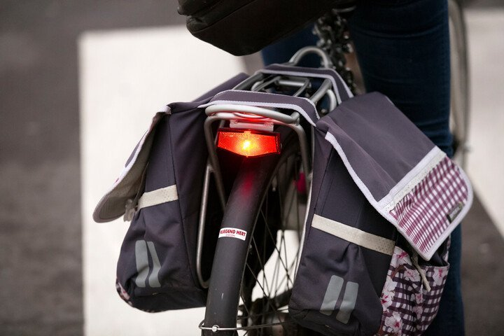

Mag een fietslicht knipperen?

- Ja, dat mag zowel voor- als achteraan
- Ja, maar enkel vooraan
- Nee
Fietsers moeten vooraan en achteraan een vast licht of knipperlicht gebruiken als het donker is, of als ze niet meer zichtbaar zijn vanop 200m afstand. Vooraan moet het licht wit of geel zijn, achteraan rood. Het achterlicht moet ‘s nachts bij helder weer vanop minstens 100 meter zichtbaar zijn, maar het mag nooit verblinden.